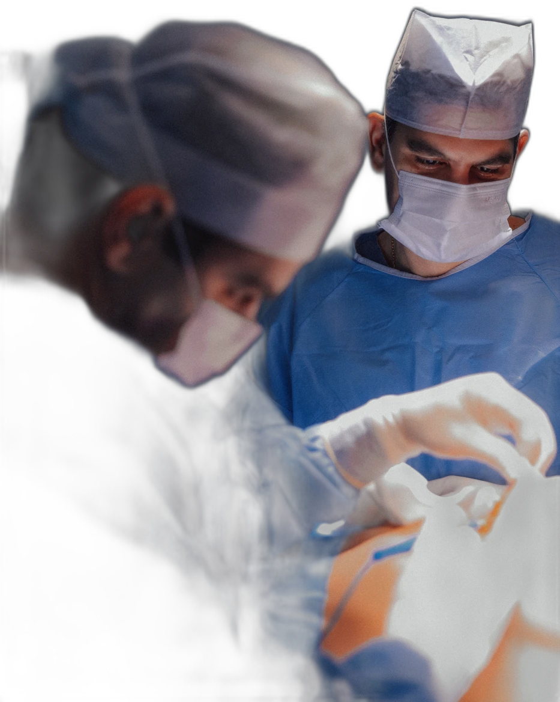

Dr. Rodrigo Anache Anbar
Médico · CRM/MS 4999 · RQE 3691
Cirurgião Plástico · Membro da SBCP · Sócio-fundador do hospital · Professor e palestrante
Conheça o Dr. Rodrigo →Corpo Clínico
Rodrigo e Rafael Anache Anbar — cirurgiões plásticos membros da SBCP, mais de dez anos de prática cirúrgica cada, e um hospital construído para o próprio ofício.
Médico · CRM/MS 4999 · RQE 3691
Cirurgião Plástico · Membro da SBCP · Sócio-fundador do hospital · Professor e palestrante
Conheça o Dr. Rodrigo →
Médico · CRM/MS 5000 · RQE 3692
Cirurgião Plástico · Membro da SBCP · Sócio-fundador do hospital · Professor e palestrante
Conheça o Dr. Rafael →Manifesto

Dois irmãos, a mesma formação médica, a mesma especialidade — e uma discordância produtiva sobre quase todo o resto. É dessa combinação que nasce o corpo clínico do Espaço da Plástica: cada caso passa por dois olhares treinados que se cobram mutuamente, como só irmãos se cobram.
Numa mesa de cirurgia, confiança não é discurso: é procedimento. Foi por isso que os irmãos Anache Anbar levaram a escolha pela cirurgia plástica à sua consequência lógica — um hospital inteiro dedicado a uma única especialidade, onde a equipe, o bloco e a recuperação existem em função do mesmo ofício.
“Não existe transformação sem aprendizado e conhecimento.”
Cirurgiões plásticos com RQE — Registro de Qualificação de Especialista — e membros da Sociedade Brasileira de Cirurgia Plástica.
Mais de dez anos de prática cirúrgica cada um, numa trajetória iniciada em Campo Grande em 2011.
Sócios-fundadores e administradores do Hospital Espaço da Plástica, no Jardim dos Estados.
Professores e palestrantes — o hospital também sedia treinamento prático para médicos, em turmas reduzidas.
Agende sua avaliação